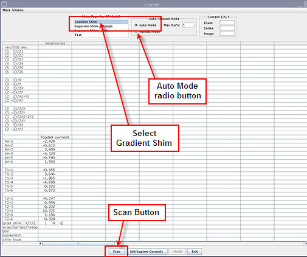

[Gradient Shim] shim type
[Auto Mode] radio button
Illustration 4: LVShim Tool

In Auto mode, the tool automatically:
Sets up the protocol and collects image data.
Calculates the harmonics and compares it with the specification.
Calculates dc offsets for X, Y and Z.
Completes multiple iterations (maximum = 5) until harmonics meets the specification.
Lists the last iteration reanalyzed at 45 DSV in Test Mode (customer acceptance specifications) in the final column.